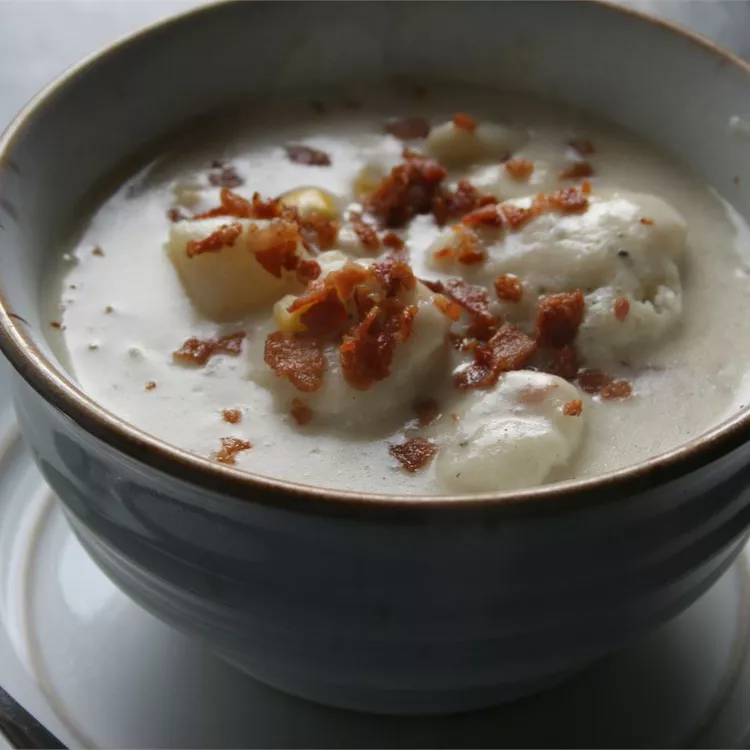

Bacon Chicken and Dumplings

Link to allrecipes
Description
This recipe is so easy, and very tasty as well!
Ingredients
- 3 slices bacon
- 3 large potatoes, peeled and diced
- 1 onion, diced
- 4 skinless, noneless chicken breat halves, diced
- 3 cups chicken broth
- 1 teaspoon poultry seasoning
- salt and pepper to taste
- 1 (15.25 ounce) can whole kernel corn, drained and rinsed
- 3 cups half-and-half
- 1 1/2 cups biscuit mix
- 1 cup milk
Directions
- Place bacon in a large, deep skillet. Cook over medium high heat until evenly brown. Drain, crumble and set aside; reserve bacon drippings in skillet.
- Add potatoes, onion and chicken to bacon drippings and cook for 15 minutes, stirring occasionally. Pour in chicken broth; season with poultry seasoning, salt and pepper. Stir in corn, and simmer all together for 15 minutes.
- Pour in half-and-half and bring to a boil; add crumbled bacon. In a medium bowl, combine biscuit mix with milk and mix well (dough should be thick). Drop tablespoon sizes of dough into boiling mixture; reduce heat and simmer for 10 minutes uncovered, then another 10 minutes covered. (Note: Do not stir while simmering, or dumplings will break apart). Serve hot.